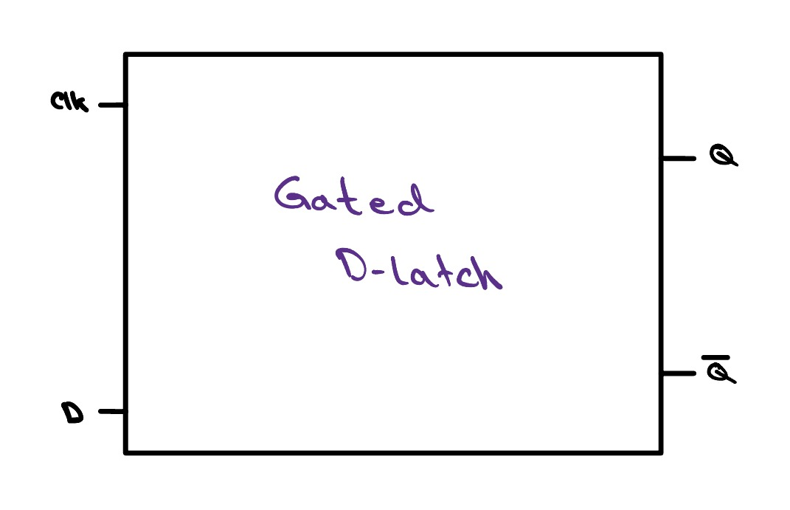
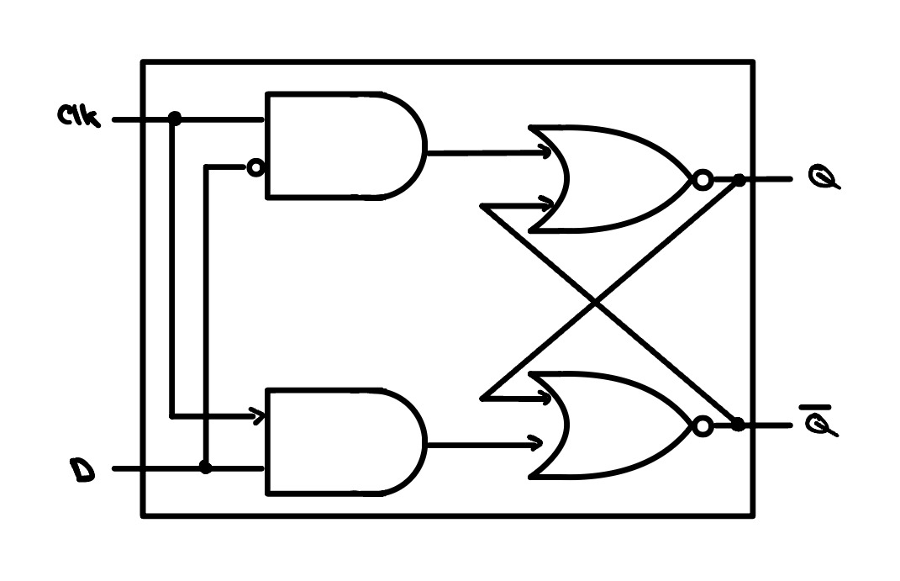
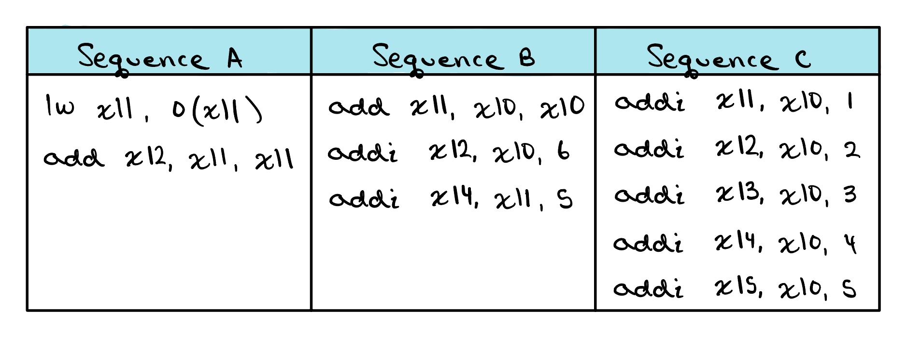
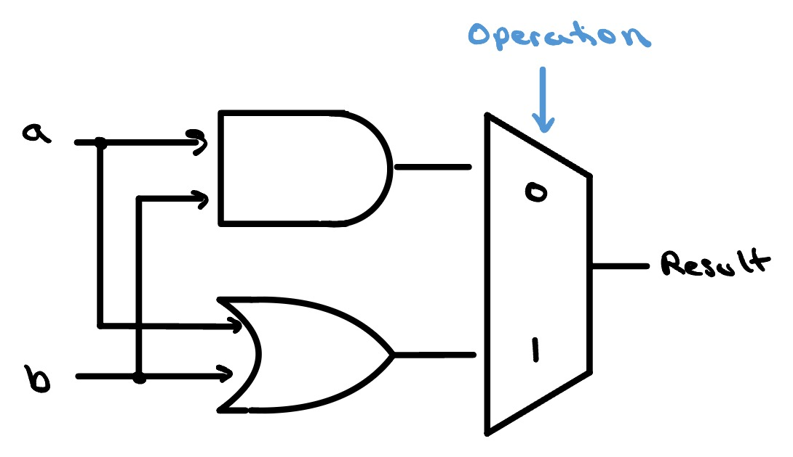

Learn how processors are actually built.
For students, hobbyists, career-switchers, tinkerers, and the merely curious, young or old. Learn the genius behind the heart of modern computing.
Your Path
-
Logic Gates
The building blocks behind even the most complex computing systems. Learn the basics.
-
Full Adder
Chain a few gates together and you can add two bits and carry the result — the first real arithmetic in hardware.
-
Arithmetic Logic Unit
The engine of the CPU, executing billions of instructions per second. Adders and logic combined into one.
-
Single Cycle CPU
The first step in understanding how a processor works. One instruction; one clock cycle.
-
Floating Point Adder
Learn the basics of floating point numbers, how they're stored, and how they're added together.
-
Pipelined CPU
Learn about pipelining and improve the throughput of your single cycle design.
-
Memory Hierarchy
Learn the role memory plays in computing systems, from caches to hard drives, and how the CPU interacts with them.
-
Physical Design
Place and route every transistor into a real silicon layout — the floor plan that actually gets fabricated.
-
Timing Analysis
Check that every signal settles before the next clock edge — the analysis that sets how fast your chip can safely run.
Hands on
Each lesson comes with a variety of interactive widgets — each of which designed to elevate your learning, get your hands dirty, and put what you've just learned to work.


clk is high the
output follows d; when it drops low, it holds the last value.
Check Yourself
For each sequence below, state whether it must stall, can avoid stalls using only forwarding, or can execute without stalling or forwarding.

Interactive Waveforms

How to get started
Find the project that's right for you, or begin at the start and work your way through them in order. You don't learn to ride a bike by reading about it! Get going!